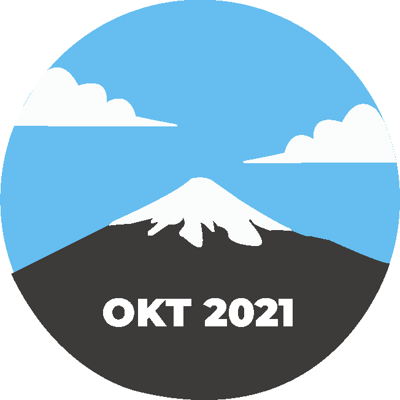
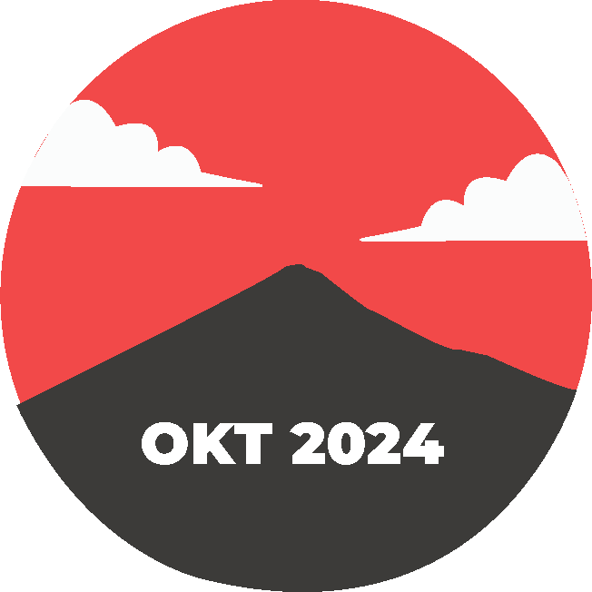
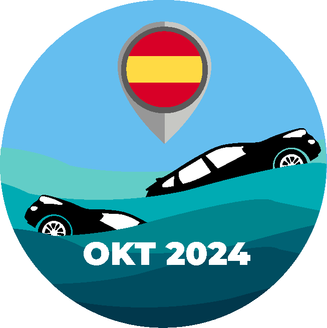
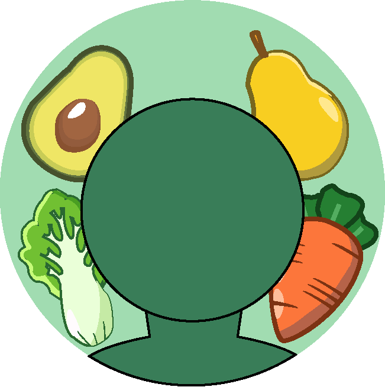

Klimaat
De opwarming van het klimaat brengt verschillende factoren met zich mee die zowel de natuur als de mensheid in gevaar brengen.
Denk bijvoorbeeld aan stijgende zeespiegels doordat de ijskappen en gletsjers smelten, wat resulteert in hogere zeespiegels. Extreme weersomstandigheden, zoals hittegolven, droogtes en overstromingen, nemen toe, wat grote gevolgen heeft voor onze ecosystemen. Hittegolven zijn vooral gevaarlijk voor kwetsbare groepen zoals kinderen en ouderen.
Daarnaast kan verzuring van de oceaan optreden, omdat de CO₂-uitstoot door de oceanen wordt opgenomen. Dit kan leiden tot verzuring van het water, met schadelijke effecten op zeedieren. Aangezien veel voedselketens in de oceaan beginnen, kan dit een negatief effect hebben op de wereldwijde voedselvoorziening.
Door de opwarming drogen veel gebieden uit en wordt toegang tot schoon drinkwater moeilijker. Tegelijkertijd neemt de vraag naar water constant toe. Deze watertekorten kunnen leiden tot conflicten tussen mensen, wat wederom spanningen in de samenleving veroorzaakt, iets wat we helaas al vaak zien.
 Mount Fuji
In oktober 2024 bleef de top van Mount Fuji voor het eerst in 130 jaar sneeuwvrij. Dit heeft vooral te maken met de hoge temperaturen in Japan. De zomer van 2024 was de warmste ooit gemeten in het land. Hoewel het moeilijk is om een specifieke oorzaak aan te wijzen, suggereren experts dat klimaatverandering een rol speelt bij deze ongebruikelijke weersomstandigheid. De opwarming van de aarde leidt tot hogere temperaturen, wat resulteert in minder sneeuw dan we voorheen gewend waren.
Overstromingen Spanje
In oktober 2024 werd Spanje, vooral het zuidoosten van het land, getroffen door zware overstromingen die meer dan 200 dodelijke slachtoffers eisten. Dit natuurverschijnsel werd veroorzaakt door een zogenaamde DANA (Depresión Aislada en Niveles Altos). Dit gebeurt wanneer een massa koude lucht op grote hoogte wordt losgekoppeld van de hoofdluchtstroom en als een geïsoleerde “zak” in de atmosfeer blijft hangen. Dit zorgt voor hevige regenval die plotselinge overstromingen veroorzaakt. De frequentie en intensiteit van dit soort extreme weersomstandigheden nemen toe door klimaatverandering. Hogere temperaturen en veranderende weerpatronen versterken de hevigheid van dergelijke gebeurtenissen.
Wat kan jij doen?
Probeer zelf minder vaak de auto te gebruiken en kies voor alternatieven zoals fietsen, wandelen of het openbaar vervoer. Minder autokilometers en uitstootarme alternatieven helpen direct bij het verminderen van broeikasgassen!
Wat ik zelf de afgelopen week heb gedaan, is volledig veganistisch eten. De veehouderij is namelijk verantwoordelijk voor een groot deel van de wereldwijde uitstoot van broeikasgassen, zoals methaan en CO₂. Door plantaardig te eten, verkleinen we de vraag naar dierlijke producten en helpen we de uitstoot te verlagen.
Dierlijke producten, vooral rundvlees, vereisen veel land en water om te produceren. Voor elke kilo vlees zijn er veel meer natuurlijke hulpbronnen nodig dan voor plantaardige producten. Minder vleesconsumptie betekent minder ontbossing voor veevoer en meer ruimte voor bossen die CO₂ kunnen opnemen.
Dus, doe eens gek en probeer een veganistisch dieet! Het is echt veel meer dan alleen groenten en fruit. Anno 2024 zijn er talloze heerlijke recepten voor elke maaltijd van de dag die volledig veganistisch zijn en vrij van dierenleed.
Dus ga veganistisch en hou de toekomst optimistisch!